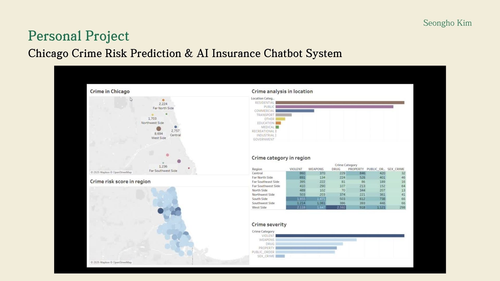
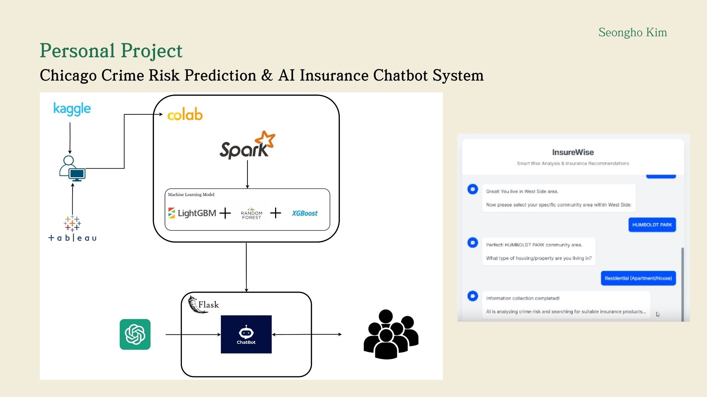
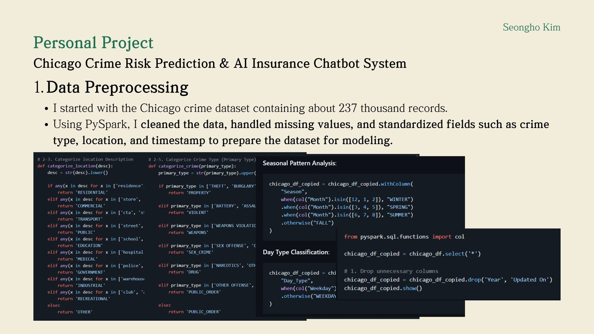
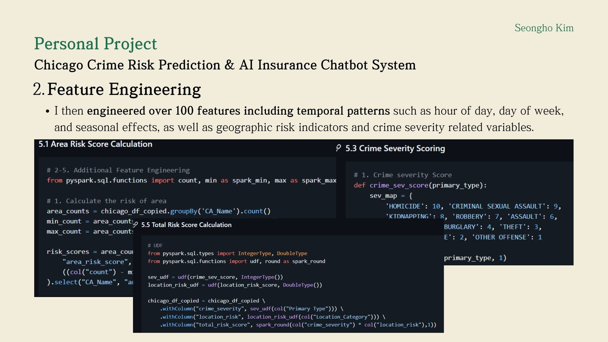
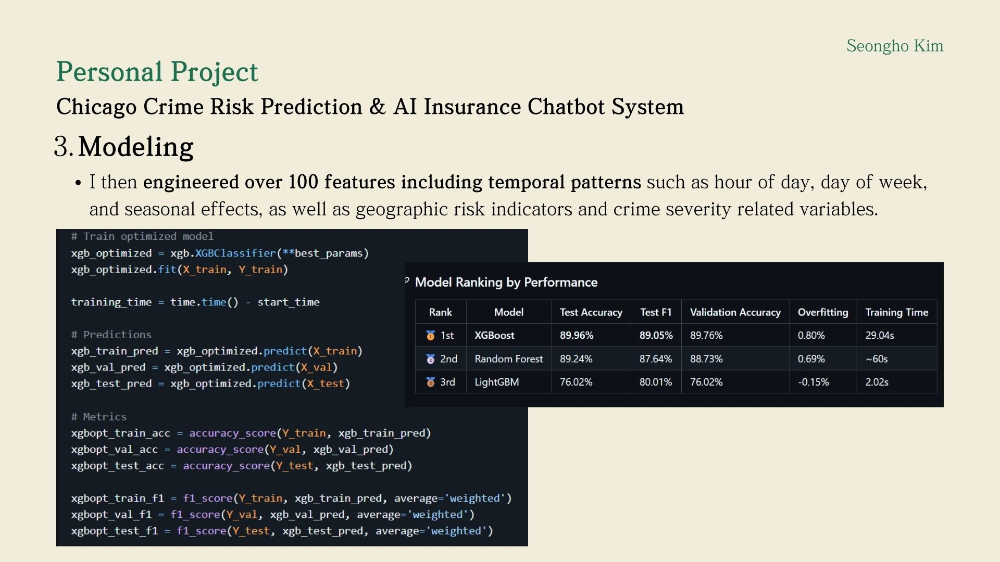
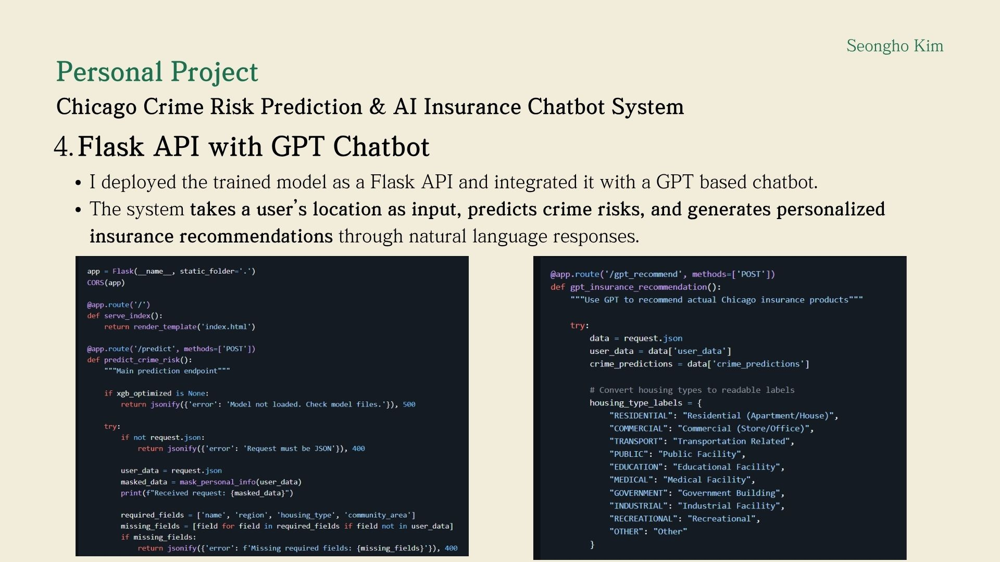

This project is an end to end AI system that predicts regional crime risk from large scale public safety data and translates those predictions into actionable insurance recommendations through a conversational interface. Rather than stopping at model prediction, I designed the pipeline to connect data engineering, feature engineering, model optimization, and AI deployment into one integrated system.
Public crime datasets are complex and difficult for non technical users to interpret. The goal of this project was to not only predict crime risk, but also convert those predictions into intuitive, user friendly insights and personalized insurance recommendations using a GPT based chatbot.

This dashboard summarizes the final output of the project, combining regional crime distribution, category level analysis, and severity based risk scoring. I focused on making the results interpretable so users can quickly understand where risk is concentrated and what factors are driving it.

The system starts with Kaggle crime data, followed by PySpark based preprocessing and feature engineering. I then trained multiple models including XGBoost, Random Forest, and LightGBM, and deployed the best model through a Flask API. Finally, I integrated the system with a GPT based chatbot to enable natural language interaction.

I processed about 237 thousand crime records using PySpark. This included data cleaning, handling missing values, and standardizing fields such as crime type, location, and timestamp. I also mapped raw location descriptions into structured categories to make the dataset suitable for modeling.

I engineered over 100 features capturing temporal patterns such as hour, weekday, and season, as well as geographic and severity based risk indicators. In particular, I designed composite risk features by combining location based risk and crime severity, which significantly improved model performance.

I compared XGBoost, Random Forest, and LightGBM using accuracy, F1 score, and validation performance. XGBoost performed best with 89.96 percent test accuracy and strong generalization, making it the final model for deployment.

I deployed the model as a Flask API and integrated it with a GPT based chatbot. The system takes user location as input, predicts crime risk, and generates personalized insurance recommendations in natural language. This transforms the project from a prediction model into a user facing AI application.
This project shows my ability to build a complete AI system from data processing to deployment. More importantly, it demonstrates how I connect machine learning models with real user experiences by translating predictions into actionable insights.